✎ Vous pouvez répondre directement dans cette page. Vos réponses restent sur cet appareil et ne sont pas transmises à votre enseignant.
Objectif On cherche à identifier les relations entre sexe génétique et organisation anatomique et physiologique
Matériel mis à votre disposition :
Microscope avec lame de testicule normal, lame de testicule cryptorchidique, lame d’ovaire et d’utérus, Documents en annexe Animation http://svt.ac-rouen.fr/biologie/uterus/uterus.htm) Aide possible : Document sur le cycle féminin à compléter avec les vignettes à découper.
Votre réponse sera accompagnée d’un texte expliquant les points communs, d'un tableau à compléter montrant les deux phénotypes sexuels et de 2 schémas à légender.
Tableau comparatif des deux phénotypes sexuels :
Gonades
Voies génitales
Organe copulateur
mâle
femelle
fonction
Schéma à compléter
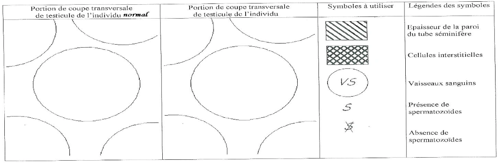
Document à observer · Agrandir l’illustration ANNEXE
Document 1 : Les caryotypes d’un homme et d’une femme 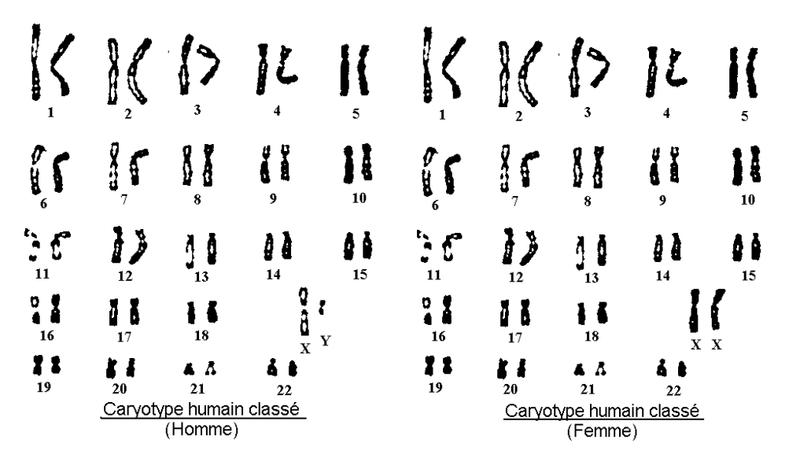
Document à observer · Agrandir l’illustration Document 2 : 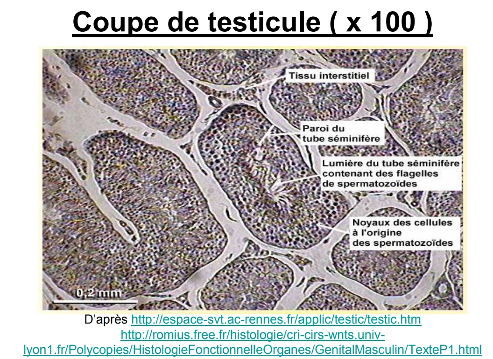
Document à observer · Agrandir l’illustration Document 3 : 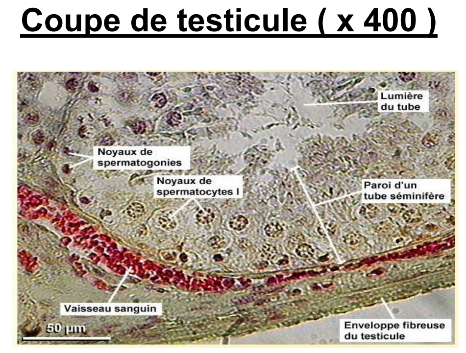
Document à observer · Agrandir l’illustration Document 4 : 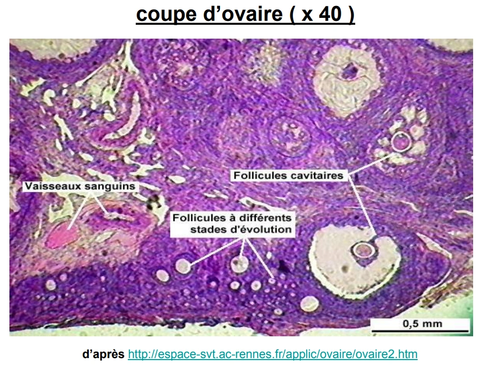
Document à observer · Agrandir l’illustration Document 5 : 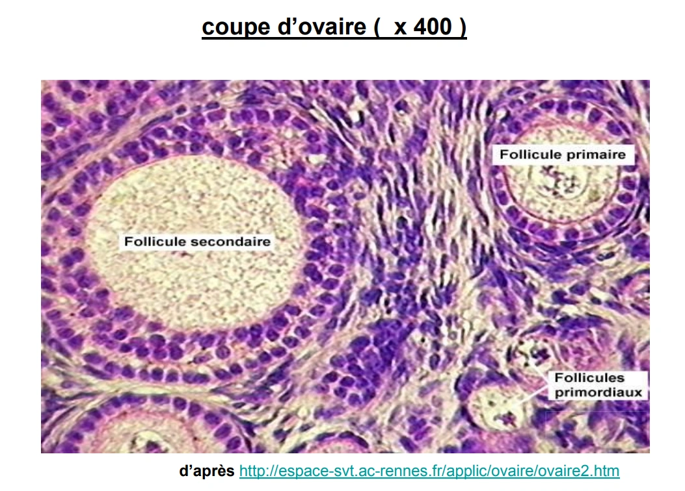
Document à observer · Agrandir l’illustration Le cycle féminin
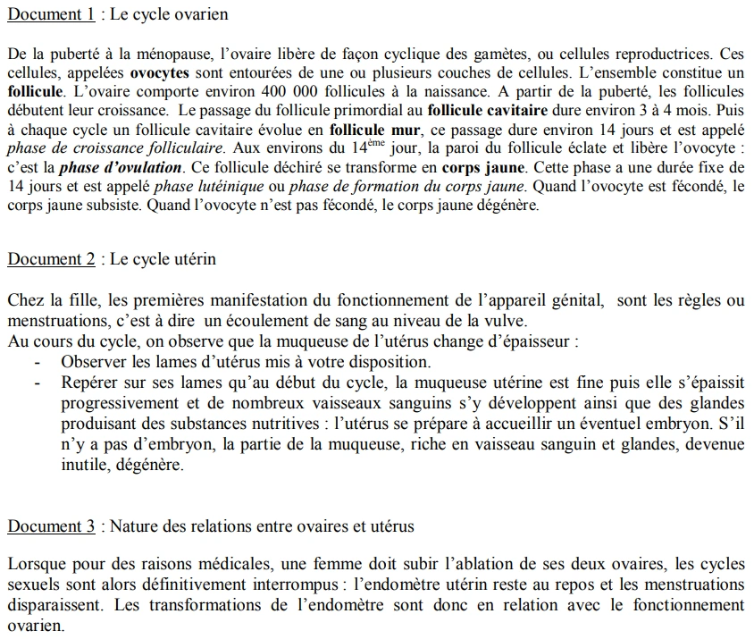
Document à observer · Agrandir l’illustration 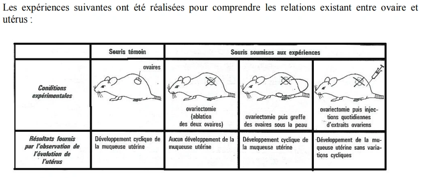
Document à observer · Agrandir l’illustration 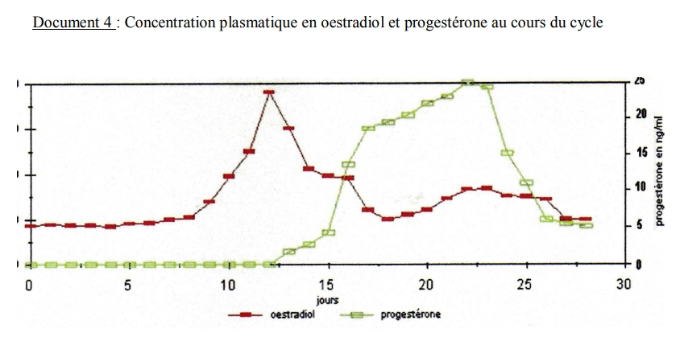
Document à observer · Agrandir l’illustration 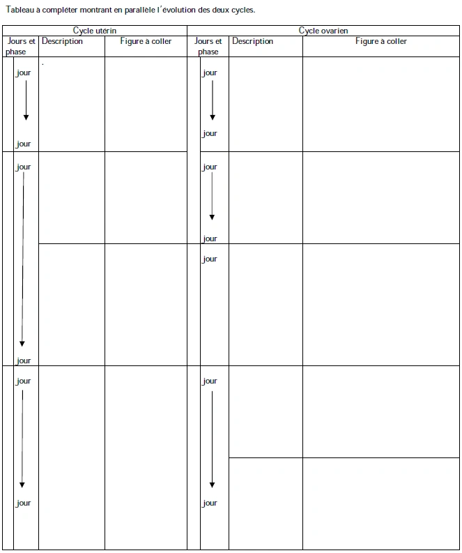
Document à observer · Agrandir l’illustration 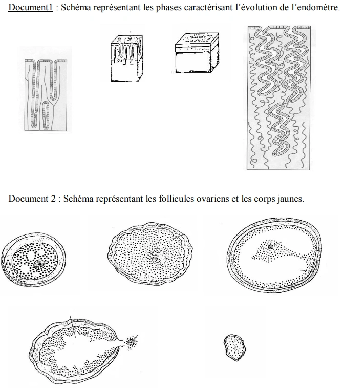
Document à observer · Agrandir l’illustration Comparer les appareils reproducteurs Expliquez les points communs entre les deux appareils reproducteurs observés. Complétez aussi le tableau et légendez les deux schémas demandés. Conservé sur cet appareil uniquement Effacer
Retrouver les ressources pour m’aider ↗